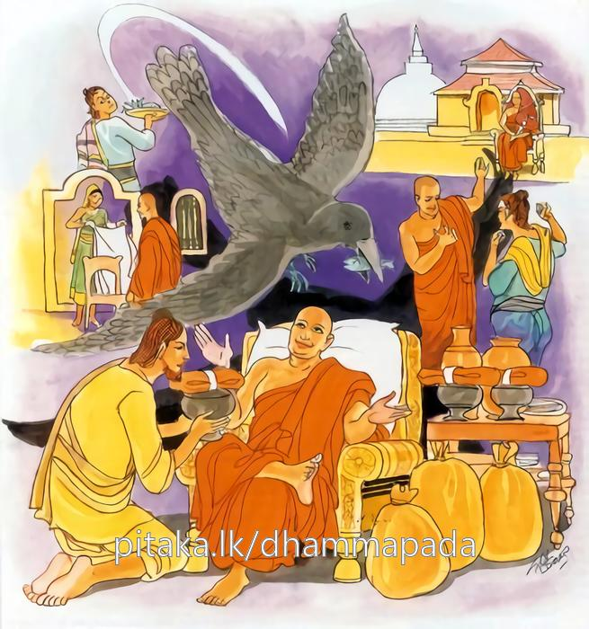
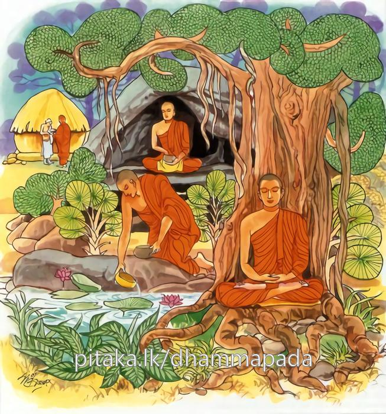

18-6 සැරියුත් තෙරුන්ගේ සද්ධිවිහාරික භික්ෂුව පිළිබඳ කථා පුවත
මෙම කතාව සද්ධර්ම සාගරයෙන් ද කියවන්න.
සුජීවං අහිරිකෙන කාකසූරෙන ධංසිනා
පක්ඛන්දිනා පගබ්භෙන සංකිලිට්ඨෙන ජීවිතං.
පවෙහි හිරි ඔතප් නැති, ගසා කෑමෙහි සුරු කවුඩකු වැනි වූ, මෙරමා ගුණ මකන, ගෙන් ගෙට දිවෙන සුලු, බුහුටි වූ, කිලිටි ආජීව ඇති මහණහු විසින් ජීවත් වීම සුවසේ කට හැක්කේ ය.

හිරීමතා ච දුජ්ජීවං නිච්චං සුචිගවෙසිනා
අලීනෙනාපගබ්භෙන සුද්ධාජීවෙන පස්සතා.
පාපයෙහි හිරි ඔතප් ඇති, පිරිසිදු කායකාර්මාදිය සතතයෙන් සොයන සුලු වූ, ප්රගල්භ රහිත (බුහුටි නොවූ), (අනෙස්නෙන් දුරු වූ බැවින්) පිරිසිදු ආජීව ඇති, එය ම සරු කොට දක්නා මහණහු විසින් ජීවත් වීම දුකසේ කටයුතු ය (රූක්ෂ ජීවිකායෙන් ජීවත් විය යුතු ය.)

"සුජීවන්ති” යන මේ ධර්ම දේශනය ශාස්තෲන් වහන්සේ දෙව්රම වැඩසිටියදී සැරියුත් හිමිගේ සද්ධිවිහාරිකයකු වූ ථුල්ල සාරික නම් භික්ෂුවක් නිමිතිකරගෙන දේශනා කළහ.
මේ භික්ෂුව දිනක් රෝගියකුට වෙදකම් කොට ප්රණීත ආහාර ලබා ඒ ආහාර සැරියුත් තෙරුන්ට පුදා නිතර මෙබඳු ආහාර ගෙන එන්නෙමියි පැවසිය. සැරියුත් තෙරුන් ඔහුගේ වචනය අසා නිහඩවුයේ ඉවත්ව ගියහ. ථුල්ලසාරික භික්ෂුව විහාරයට ගොස් තමන් රෝගියකුට වෙදකම් කළ බවත් එතැනින් ප්රණිත ආහාර ලද බවත් එය සැරියුත් හිමියන්ට පිඳු බවත් උන්වහන්සේ එය පිළිනොගෙන කිසිත් නොකියා ඉවතට ගිය බවත් බුදුහිමියන්ට පැහැදිළි කළහ. බුදුරජාණන් වහන්සේ මහණෙනි ලජ්ජා නැති තැනැත්තා ගසා කා ඇවිදින කපුටෙක් මෙය. විසි එක් ආකාර අනේසන වස්තු සෙවීමෙන් සිට සුවසේ ජීවත් වේ. හිරි ඔතප් සහිත තැනැත්තා දුකසේ ජිවත් වේයි පවසා මේ ගාථාව දේශනා කළහ.
නුගුණම අනුන්ගේ කියමින් හුඹස් කතා
කපුටෙකු මෙන් ගසා කන ගෙමිදුලක් පතා
ආජීවයෙන් කිලුටුව මිල මුදල් පතා
නිවසන අයට පහසුය "මහණකම” ඉතා
ලජ්ජා බය ඇතිව පව්කමකින් තොරව
පිරිසිදු ආජීවයෙන් දහමට බරව
නිවසක මහණහට, සුපසන් සංවරව
දුකකිය මහණකම රැකගැනුමද තිරව
ලජ්ජා බිය නැති ගසාකැමේ දක්ෂ කපුටෙකු ඇතිවු අනුන්ගේ ගුණමකාලන සුලු ගෙන් ගෙට දුවයන සුළුවු බුහුටිවූ කිළිටි දිවි පැවතුම් ඇත්තා විසින් ජීවත්වීම සුවකළ හැකිය. ලජ්ජා භය ඇති නිතර පවිත්රවු කාය කර්මාදිය සේවනය කරන සුළු දිවි පැවැත්මේ නො ඇළුනාවු බුහුටි නොවු පිරිසිදු ජිවිතා වෘත්ති ඇති එම දිවිය සාර ලෙස දකින තැනැත්තා විසින් ජීවත් විම පහසු නොවේ.
එහි අහිරිකෙන යනු සිඳුන ලජ්ජා බිය ඇති, මෙබඳු මව් නොවන අයට මව වශයෙන්ද පියා නොවන අයට පියා මෙන්ද අමතා නළවා මේ ආදී න්යායෙන් ඒක්විධි අනේසනයන් හි පිහිටි ආහාර සෙවීමේ යෙදී සුවසේ ජීවත් වීමට හැකිය. කාක සූරෙන යනු දක්ෂ කපුටෙක් යම්සේ ගෙවල් වල බත් මාලු ආදිය ගණු කැමත්තේ බිත්ති ආදියේ වාඩිවී තමා දෙස බලනසේ අනෙක් අරමුණකින් සිටින සේ නිදාගෙන සිටින සේ දක්වා ගෙයි මිනිසුන්ගේ ප්රමාදයක් සලකා පැන සෝ - සෝ යයි කෑගසන විටද භාජනයෙන් කෑම සුරාගෙන පලායයි.
මෙලෙසට ලජ්ජා නැති මහණ ද භික්ෂූන් සමග ගමට පිවිස කැඳ බත් ආදිය සොයයි. එහිදී භික්ෂුහු පිඬු පිණිස හැසිර යැපීම් පමණක් ගෙන ගොස් ප්රත්ය වේක්ෂා කරමින් කැඳ බී. කර්මස්ථාන මෙනෙහි කරත්. ධර්මය සජ්ඣායනා කරත් ආසන ශාලා අමදිත් මේ ලජ්ජා නැති තැනැත්තා කිසිවක් නොකර ගමට අභිමුඛවම සිටියි. එම භික්ෂුව මෙය බලන්නැයි බලන්නේ නමුදු නොබලන්නාසේ නිදා ගත්සේ සිට ගණ්ඨිය ලෙහන ලෙස සිවුර හදන ලෙස දක්වා මට අසවල් කාර්යය ඇතැයි කියමින් අසුනෙන් නැගිට ගමට පිවිස උදේම වෙන්කරන ලද නිවෙස්ලින් වෙනත් නිවෙස්වලට එළඹී ගෙවල මිනිස්සු තරමක් දොර පලුව වසා දොරළග වාඩිවී අඬමින් සිටින විටද, එක් අතකින් කවුළුවට පාවි ඇතුළතට පිවිසේ. අනතුරුව ඔහු දැක අකමැත්තෙන්ම අසුනක වාඩි කරවා කැඳබත් ආදී යමක් තිබේද? එය දෙති. ඔහු දුන්නක් වළදා අවශේෂය පාත්රයේ තබාගෙන එයි මොහු කාකසුර නම් මෙබඳු තැනැත්තා විසින් ලජ්ජා නොමැතිවම සුවසේ ජීවත් වේ යන අර්ථයි.
ධංසිනාති යනු අසුවල් තෙරුන් අල්පේච්ඡයි ආදීය කියනවිට ඇයි අපි අල්පේච්ඡ නොවේද? ආදී වශයෙන් අන්අයගේ ගුණ මකාලීමට පෙළඹේ.
මෙබඳු වචන අසා මොහුද අල්පේච්ඡා තාදී ගුණවලින් යුතු යයි සිතමින් මිනිසුන් විසින් දියයුතුයයි සිතති. ඔහු එතැන් සිට නැණවත් පුද්ගලයින්ගේ සිත සතුටු නොකිරීමට නොහැකිවන්නේ ලාභයෙන් ද පරිහාණියට පත්වේ.
මෙසේ අලජ්ජි පුද්ගලයා තමන්ගේ ද අනුන් ගේ ද ලාභය විනාශකරයි. පක්ඛන්දිනා යනු පැනගිය පුද්ගලයායි. පක්ඛන්දවාරී පුද්ගලයා අනුන්ගේ කටයුතු තමන්ගේ කටයුතු ලෙස පෙන්වමින් අළුයම භික්ෂූන් නැගිට චෛත්ය මිදුල් ආදිය හැමද කර්මස්ථාන මෙනෙහි කරමින් මනසිකාරයෙන් ස්වල්ප වේලාවක් ගතකොට ගමට පිවිසෙන විට, තෙමේ මුහුණ සෝදා රන්වන් කොට රතු ගොකළ පොරවා ඇසේ අඳුන් හිසෙහි තෙල් ගා ආදී ආත්ම භාවය මණ්ඩනය කොට ගෙන වත්පුරන ආකාරයක් දැක්වීම සඳහා ඉදල් පහර දෙකතුනක් ගසා පියා ගදොරට පිවිසෙන තැනට පිවිසියේ වෙයි.
මිනිස්සු උදේම චෛත්යය වඳිමුයි මල් පුජා කරමුයි පැමිණි අය මේ ක්රියාව දැක මේ විහාරයේ පිරිසිදු කිරිම මේ තරුණ භික්ෂුව නිසාම සිඳු වේයි මොහු වෙන් නොවේවායි පවසා ඔහුටම දියයුතුයයි සිතති. මෙබඳු පනින අයටද ජීවත්වීම පහසුය. පගඛහ නම් කායික බුහුටි සුර මිනිසුන් රැවටීම සඳහා ස්ථානෝචිතව සංකිලියන ජීවිතට මෙලෙස දිවි ගෙවා ජීවත්වන පුද්ගලයා කිළිටි වී ගත කරන එම ජිවිතය ජිවිතයක් වේ. පව්කාර ජීවිතයක් මේ යන අර්ථයි. හිරිමතාච යනු හිරි ඔතප් යුත් පුද්ගලයා විසින් දුකසේ ජීවත්විය යුතුය. ඔහු අම්මා නොවන අයට අම්මා සමානයයි අදිය නොකියා අසාර්මික ප්රත්යයන් අසුචි සේ සිතා පිළිකුල් කරන්නේ දැහැමින් සෙමෙන් සොයන්නේ ගෙපිළිවෙලින් පිඬුසිඟා ගොස් ජීවිතය ගතකරන්නේ රුක්ෂ ජිවිතයක් ගත කරයි යන අර්ථයි. සුචිගවෙසි නම් පිරිසිදු කායකර්මාදි සොයන්නේ. අලීනෙනා - යනු ජීවිත වෘත්තියෙහි නො ඇලී සුද්ධාජීවෙන පස්සනා එබඳු පුද්ගලයා සුද්ධා ජීව නම් වේ. මෙබඳු පිරිසිදු දිවිගෙවීම සාරවශයෙන් බලන්නේ රළු දිවියක් ලෙස දුජ්ජීව නම් වේ. දේශනය අවසානයේ බොහෝදෙන සෝවාන් ආදී මාර්ග ඵලයන්ට පැමිණියහ.